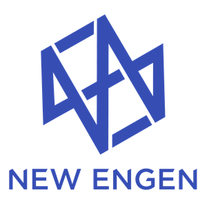
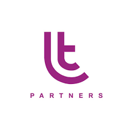
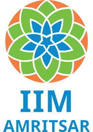

Professional Experience

Analytics Engineer
New Engen | Jun 2023 - Present
- NewEngen is an industry-leading digital marketing agency partnering with bold brands to drive impact across every stage of the customer journey
- Building products and reports on LIFT - A 'Partnership Performance Analytics' SaaS platform for program management and growth in the marketing industry
- Building LIFT covering data science, user experience, user journey while managing data engineering and analytics to create proprietary dashboards

Data Science Intern
LT Partners | Nov 2022 - Jun 2023
- LT Partners is a marketing and consulting firm, specifically focusing on digital marketing and partner marketing channels, with a primary area of expertise in redefining affiliate marketing
- Developed and implemented sophisticated revenue projection models to enhance data-driven client consultations and strategic decision-making

Content Writer
Medium | Freelance | Aug 2022 - Present
- Authoring comprehensive technical articles focused on data science, SQL optimization, Python programming, and related technologies for the global developer community
- Featured writer in prominent Medium publications including DevOps.edu and Analytics Vidhya, with articles on database optimization techniques reaching thousands of readers worldwide
Research Experience

Machine Learning Intern
Indian Institute of Management Amritsar | Jun 2022 - Jul 2022
- This Internship Involves the study and analysis of YouTube comments on videos related to K-POP and Korean culture to understand the sudden popularity and increase in influence of Korean culture across the western world
- Used python Libraries spacy and nltk to carry out NLP operations such as stemming, Lemmatizing, stop words removal and removing comments in other language and cleaning the texts of any emojis and special symbols
- Utilised Gensim, PyLadvis and Matplotlib to do Topic Modelling by Latent Dirichlet Allocation on comments and find a common theme among all the different videos through the years

Interdisciplinary Research Intern
National Institute of Technology Tiruchirappalli | Oct 2021 - Jan 2022
- This Internship involves the study of the simulation and prediction of Low Reynolds number swimmer's motion by making use of the previous observed Dynamics and other factors such as the fluid velocity and viscosity
- Used keras Framework and libraries Pandas and Numpy to analyze raw data from COMSOL and MATLAB to analyze the factors affecting Micro Swimmers Dynamics
- Built and simulated various types of Swimmers such as Spherical, 2link, and Purcell Swimmer with the help of COMSOL Multiphysics and verified the model results with Research Papers